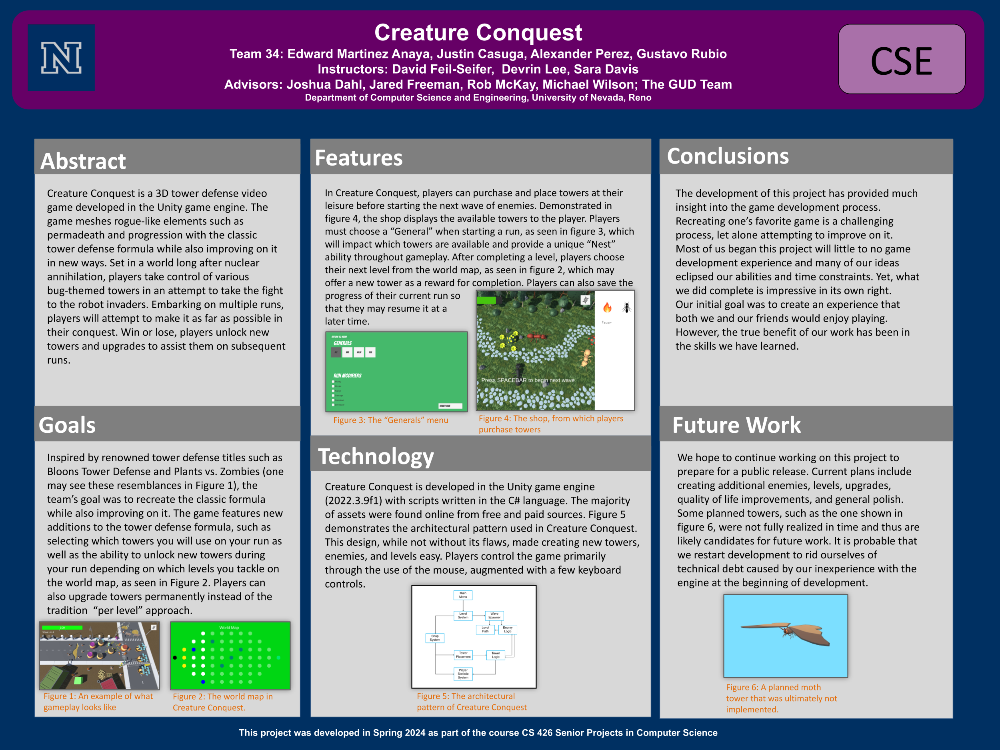

Team 34
Members: Alexander Perez Herrera, Gustavo Rubio, Justin Casuga, & Edward Martinez Anaya
Instructors: Sara Davis, Devrin Lee, Vinh Le, Hossein Jamali, & Zach Estreito
Advisors: Rob McKay, Michael Wilson, Jared Freeman, Joshua Dahl; GUD Team
Project Description:
Creature Conquest is a 3D tower defense video game developed in the Unity game engine. The game aims to put a new spin on the widely popular tower defense genre by introducing roguelike elements such as permadeath and progression. Players embark on ‘runs’ where they attempt a series of levels. Win or lose, players unlock new towers and upgrades that can be utilized on subsequent runs.
